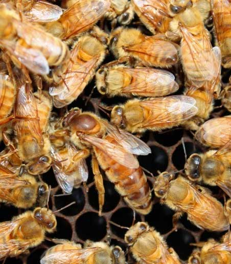

Породы пчел
Карпатская пчела:
Происхождение: Карпатская пчела происходит из гористых регионов, прилегающих к Карпатским горам в Центральной и Восточной Европе.
Особенности:
Карпатская пчела отличается миролюбивым и спокойным характером, что делает их идеальными для начинающих пчеловодов.
Они обладают светлым цветом тела, нежно-оранжевым или золотистым, и часто имеют темные полосы на брюшке.
Эта порода хорошо адаптирована к холодным и влажным климатическим условиям, что делает их особенно популярными в северных регионах.
Карпатские пчёлы обычно показывают высокую продуктивность в сборе мёда и устойчивость к болезням.
Применение: Карпатские пчёлы широко используются в пчеловодстве, особенно в Европе, для сбора мёда, воспроизводства и укрепления пчелиных семей.
Итальянская пчела:
Происхождение: Итальянская пчела происходит из средиземноморских регионов, особенно из Италии, где они получили своё название.

Особенности:
Итальянские пчёлы имеют миролюбивый и трудолюбивый характер, а также отличаются высокой продуктивностью и хорошей адаптацией к различным условиям среды.
Они обладают жёлтым цветом брюшка и золотисто-коричневой головой, что делает их отлично различимыми.
Итальянские пчёлы обычно быстро развиваются и рано начинают собирать мёд в сезон.
Применение: Итальянские пчёлы широко используются в пчеловодстве по всему миру благодаря их высокой продуктивности, дружелюбному характеру и способности быстро развиваться.
Карника:
Происхождение: Карника происходит из гористых регионов Юго-Восточной Европы, особенно из Словении, Австрии и Швейцарии.
Особенности:
Карника отличается миролюбивым характером и отличной адаптацией к холодному климату, что делает их популярными в северных регионах.
Они имеют тёмное тело и ярко-жёлтую полосу на брюшке.
Карника обладает способностью эффективно использовать ресурсы, что делает их идеальными для экстенсивного пчеловодства.
Применение: Карника широко используется в пчеловодстве, особенно в северных регионах, благодаря их хорошей адаптации к холоду и высокой продуктивности в сборе мёда.
Среднерусская:
Происхождение: Среднерусская пчела происходит из центральных регионов России и соседних стран.
Особенности:
Среднерусские пчёлы обладают светлым цветом тела и миролюбивым характером.
Они хорошо адаптированы к среднему климату и обычно проявляют высокую продуктивность в сборе мёда.
Эта порода часто выбирается пчеловодами, занимающимися экстенсивным пчеловодством в сельских регионах.
Применение: Среднерусские пчёлы широко используются в России и соседних странах для сбора мёда и укрепления пчелиных семей.